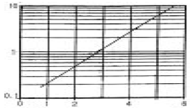
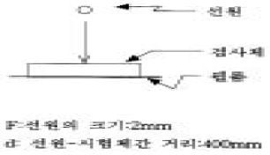
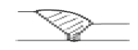
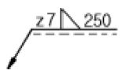

방사선비파괴검사산업기사(구) (2005-03-06 기출문제)
1과목: 방사선투과검사 시험
1. Ir-192 감마선원의 강도가 40큐리(Ci)일 때 노출시간이 2분이었다면 동일 조건에서 75일이 경과한 후 노출시간은?
- 4분
- 8분
- 12분
- 16분
(정답률: 알수없음)

2. 용접 금속내에 잔존하는 가스, 수분, 부적절한 세척 또는 전열처리 불량 등에 의하여 용접부에 발생되는 불연속의 종류는?
- 기포
- 개재물 혼입
- 용입부족
- 융합부족
(정답률: 알수없음)
3. 다음 중 방사선 투과사진의 관찰방법으로 적합하지 않은 것은?
- 관찰기의 광원의 빛이 직접 눈으로 들어오도록 한다.
- 암실에서 적당한 밝기의 관찰기를 사용한다.
- 투과사진 크기에 적합한 크기의 마스크를 사용한다.
- 식별한계콘트라스트(ΔDmin)가 가장 작아지는 조건에서 관찰한다.
(정답률: 알수없음)
4. 방사선투과시험에 대한 다음 내용중 올바른 것은?
- X선필름 종류가 바뀌어도 균열의 검출정도는 변하지 않는다.
- X선필름 종류가 변하면 균열검출도는 변하는 경우가 있다.
- 방사선 조사방향이 바뀌어도 균열검출도는 변하지 않는다.
- 방사선 조사방향이 바뀌면 기공의 검출도는 변하는 것이 보통이다.
(정답률: 알수없음)
5. 다음 중 입자가속기로 가속시킬 수 없는 것은?
- 양자(Proton)
- 전자(Electron)
- 중성자(Neutron)
- 알파입자(α Particle)
(정답률: 알수없음)
6. 방사선투과시험시 투과사진 콘트라스트를 ΔD, 식별한계 콘트라스트를 ΔDmin 라 할 때 다음 중 결함이 식별되지 않는 경우는?
- ΔD ＜ ΔDmin
- ΔD = ΔDmin
- ΔD ＞ ΔDmin
- ΔD/ΔDmin = 1.1인 경우
(정답률: 알수없음)
7. 100mR의 방사선이 두께 20㎜의 재질에 통과하여 25mR으로 감쇠되었을 때 같은 재질의 두께 40㎜에 100mR의 방사선을 입사시키면 통과한 방사선의 강도[mR]는?
- 3.8
- 6.3
- 12.5
- 17.5
(정답률: 알수없음)
8. 방사선의 피폭선량율을 나타내는 단위로 [R/h]가 쓰인다. 이것의 정확한 의미는?
- 시간당 감마선량
- 시간당 엑스선수
- 시간당 렌트겐
- 수소당 존재하는 방사선
(정답률: 알수없음)
9. 방사선투과 사진상에 투과강도와 같은 량의 산란선 강도가 작용한 결함 농도차는 산란선이 작용하지 않은 사진의 결함 농도차보다 어떻게 되는가?
- 1/2로 감소한다.
- 1/2로 증가한다.
- 1/4로 감소한다.
- 1/4로 증가한다.
(정답률: 알수없음)
10. 방사선 투과사진의 명료도(definition)에 영향을 미치지 않는 것은?
- 필름의 종류
- 기하학적 조건
- 노출시간
- 현상조건
(정답률: 알수없음)
11. 용접봉은 건조기에서 꺼낸 후 즉시 사용하여야 한다. 그러나 건조시킬만한 시간적 여유가 없어서 하루정도 지난 다음 용접봉을 사용하였다면 가장 생기기 쉬운 용접 결함은?
- 용입부족
- 크랙
- 기공
- 슬래그 혼입
(정답률: 알수없음)
12. X선 회절법을 이용한 촬영기법에 해당되지 않는 것은?
- Laue 법
- Debye-Scherrer-hull 법
- 후면 반사법
- Bragg 법
(정답률: 알수없음)
13. 방사선투과시험시 증감지에 대한 설명으로 잘못된 것은?
- 납으로부터 발생되는 2차 전자에 의해 사진작용을 증가시킨다.
- 최초의 방사선보다 파장이 긴 산란 방사선을 흡수한다.
- 산란방사선 보다 1차 방사선을 증가시킨다.
- 납 증감지는 100kVp이하의 저에너지 방사선일 때, 사진작용의 증가 효과가 매우 크다.
(정답률: 알수없음)
14. 자분탐상검사에서 자분의 성질에 대한 설명중 틀린 것은?
- 자기적 성질은 자분의 분산성과 결함부위로의 흡착성에 영향을 준다.
- 보자력이 높아야 좋다.
- 자분은 응집이 잘 안되도록 분산성이 좋아야 한다.
- 자분은 현탁성이 좋아야 한다.
(정답률: 알수없음)
15. 방사선의 관리에 관한 설명이 잘못된 것은?
- 사용후 선원이 용기내에 있는지 확인한다.
- 작업개시전 작업주변의 방사선량을 측정 기록한다.
- 사용전 선원용기, 안전장치 등이 정상인지 확인한다.
- 일시적 사용시 관리구역내 일반인 출입을 개방한다.
(정답률: 알수없음)
16. 다음 중 필름특성곡선(H&D Curve)으로 알 수 없는 것은?
- 관용도(Latitude)
- 필름감도(Film speed)
- 불선명도(Unsharpness)
- 필름 콘트라스트(film contrast)
(정답률: 알수없음)
17. 시험체 표면의 열린 결함만 검출할 수 있는 비파괴검사법은?
- 방사선투과검사
- 자분탐상검사
- 침투탐상검사
- 음향방출검사
(정답률: 알수없음)
18. 감마선조사장치에 사용될 Ir-192 20Ci를 제조 후 200일이 경과되었다. 현재의 강도는 얼마가 되겠는가?
- 3.07Ci
- 5.23Ci
- 7.15Ci
- 12.2Ci
(정답률: 알수없음)
19. 다음 중 비파괴검사의 결함검출 방법과 관계가 먼 것은?
- 방사선투과검사
- 초음파탐상검사
- 스트레인측정
- 전자유도시험
(정답률: 알수없음)
20. 다음 중 방사선투과검사시 사용되는 개인피폭선량계가 아닌 것은?
- 필름뱃지(film badge)
- 열형광선량계(TLD)
- 포켓도시메터(pocket dosimeter)
- 서베이메터(survey meter)
(정답률: 알수없음)
2과목: 방사선투과검사 시험
21. 방사선투과검사에서 SFD를 36cm로 놓고 노출시켰을 때 양질의 투과사진을 얻었다. 이 때 다른 조건은 변화시키지 않고 SFD를 18cm로 변경시켰을 때의 노출시간은 ?
- 변하지 않는다.
- 대략 80% 길어진다.
- 대략 55% 줄어든다.
- 원래 노출 시간의 25%가 된다.
(정답률: 알수없음)
22. 다음 중 연(납)박 증감지를 사용하는 것이 좋은 경우는?
- 형광 투과시험
- 고전압 방사선투과시험
- 제로 Radiography
- 저전압 방사선투과시험
(정답률: 알수없음)
23. 시험체 두께가 서로 다른 부위를 허용농도 범위에 맞추어 동시에 촬영하기 위해서는 관용도를 증가시켜야 하는데, 그 증가 방법은?
- 스크린을 사용하지 아니한다.
- 형광 스크린을 사용한다.
- 각각의 카셋트에 필름을 넣어 동시에 촬영한다.
- 감광속도가 다른 두 장의 필름을 한 장의 카셋트에 넣어 촬영한다.
(정답률: 알수없음)
24. 용접부의 방사선투과 사진상에 비드 가장자리(Edge of fu sion zone)를 따라 나타나는 여러가지 폭을 가진 검은 선(dark line) 형태의 결함을 무엇이라 하는가?
- 언더컷(Undercutting)
- 종균열(Longitudinal crack)
- 융합부족(Incomplete fusion)
- 용입부족(Incomplete penetration)
(정답률: 알수없음)
25. 판형 투과도계를 사용한 투과사진의 1 - 2T수준에서 2T 구멍이 확인되었을 때 등가투과도계감도(Equivalent IQI Sen-sitivity)는 ?(단, 투과두께 1인치일 경우)
- 1%
- 2%
- 4%
- 7%
(정답률: 알수없음)
26. X-선 발생장치로 필름특성곡선 작성시 mA를 증가시키면 어떤 현상이 발생되는가?
- 특성곡선의 경사변이 증가한다.
- 특성곡선에 별로 영향이 없다.
- 특성곡선의 평균변화율이 현저히 감소한다.
- 특성곡선의 평균변화율이 현저히 증가한다.
(정답률: 알수없음)
27. 방사선투과시험시 용접의 루트 패스(root pass)에서 주로 발생하고 영상이 검게 나타나는 결함들은?
- Slag inclusion, porosity
- Hollow bead, concavity
- Undercut, Burn-through
- Overlap, spatter
(정답률: 알수없음)
28. 방사선투과시험시 시험체 형태에 맞게 구멍이 뚫린 납판(lead mask)을 사용하는 경우가 있는데 그 이유는?
- 명료도를 감소시키기 위해서
- 산란방사선을 감소시키기 위해서
- 시편의 흔들림을 방지하기 위해서
- X선을 경화(hardening)시키기 위해서
(정답률: 알수없음)
29. 방사선투과시험시 형광증감지는 연박증감지에 비해 어떤 점이 일차적인 장점인가?
- 노출시간 증가
- 노출시간 단축
- 영상의 선명도 증가
- 산란방사선에 효과적
(정답률: 알수없음)
30. 다음 중 Co-60의 에너지는?
- 0.084, 0.⑤2 MeV
- 0.31, 0.47 MeV
- 0.66 MeV
- 1.33, 1.17 MeV
(정답률: 알수없음)
31. 10Ci의 Ir-192가 2.5 Ci로 되는데 걸리는 시간은?
- 75일
- 125일
- 150일
- 200일
(정답률: 알수없음)
32. 현상처리된 필름상에 주위보다 밝은 pin hole의 인공결함이 생길 수 있는 원인은?
- 정전기 방전
- 필름에 압력을 주었을 때
- X선 회절에 의한 반점
- 현상중 필름위에 기포가 있었을 때
(정답률: 알수없음)
33. 다음의 그래프는 25MeV Betatron의 철강에 대한 노출선도이다. 횡측이 철강의 두께를 나타낼 때 종측은 노출량을 나타낸다. 이 노출량의 단위는?

- R(렌트겐)
- rad(라드)
- rem(렘)
- mA-min(밀리암페어-분)
(정답률: 알수없음)
34. Ir-192의 방사선 출력(Radiation output)은 얼마인가?
- 약 0.003 RHM/Ci
- 약 0.48 RHM/Ci
- 약 0.32 RHM/Ci
- 약 1.3 RHM/Ci
(정답률: 알수없음)
35. 공업용 방사선 투과사진을 촬영할 때 있어서 기본적인 3가지 필수사항이 아닌 것은?
- 방사선 선원
- 시험할 물체
- 차폐물
- 필름
(정답률: 알수없음)
36. 초점이 작은 X선관은 큰 X선관에 비하여 어떤 점이 좋은가?
- 명료도가 향상된다.
- 농도가 커진다.
- 콘트라스트가 좋아 진다.
- 투과력이 초점의 면적에 비례해서 커진다.
(정답률: 알수없음)
37. 저전압 방사선투과시험과 비교하여 고전압 방사선투과시험을 옳게 설명한 것은?
- 명암도가 커진다.
- 초점크기가 커진다.
- 관용도가 커진다.
- 일차방사선 빔강도에 관련된 산란방사선의 양이 커진다
(정답률: 알수없음)
38. 방사선투과사진 필름을 건조하기 위한 가장 적당한 온도는?
- 약 20℃
- 약 40℃
- 약 60℃
- 약 80℃
(정답률: 알수없음)
39. 방사선과 물질과의 상호작용에서 전자가 발생하는 현상이 아닌 것은?
- 광전효과
- 연속X-선
- 컴프턴산란
- 전자 쌍생성
(정답률: 알수없음)
40. 정지처리를 할 때 일반적으로 사용되는 정지액은?
- 빙초산 6% 수용액
- 빙초산 3% 수용액
- 알카리 6% 수용액
- 알카리 3% 수용액
(정답률: 알수없음)
3과목: 방사선안전관리, 관련규격 및 컴퓨터활용
41. 방사선의 단위로서 물질 1g당 100erg의 에너지 흡수가 있었을 때 방사선의 흡수선량은 어떻게 표시하는가?
- 1R(렌트겐)
- 1rem(렘)
- 1rad(라드)
- 1joule(쥴)
(정답률: 알수없음)
42. 방사선투과검사를 위하여 그림과 같이 배치했을 경우 기하학적 불선명도가 0.⑤mm였다면, 다른 상황은 변하지 않고 시험체와 필름사이에 5mm의 거리를 추가로 두었을 때 기하학적 불선명도의 값은?

- 0.195mm
- 0.135mm
- 0.075mm
- 0.035mm
(정답률: 알수없음)
43. 결정장기(critical organ) 즉 주어진 피폭 조건하에서 인체 중 갑상선에 큰 장애를 가져오는 핵종은?
- Na-24
- P-32
- Sr-90
- I-131
(정답률: 알수없음)
44. AWS D1.1에서 그림과 같이 두께차가 큰 모재의 맞대기 용접이음부(Transition Joint)에 대한 방사선투과검사시 요구되는 상질계(IQI)의 배치로 옳은 것은?

- 10인치 이상의 용접길이는 유공형 상질계(IQI)가 3개 사용된다.
- 10인치 이상의 용접길이는 선형 상질계(IQI)가 3개 사용된다.
- 10인치 미만의 용접길이는 유공형 상질계(IQI)가 3개 사용된다.
- 10인치 미만의 용접길이는 선형 상질계(IQI)가 3개 사용된다.
(정답률: 알수없음)
45. 이동사용의 허가를 받은 자가 일시적인 사용장소에서 방사성 동위원소 등을 비파괴검사 업무에 사용하고자 하는 때에는 동일한 일시적인 사용장소에서의 이동사용 기간이 ( )이상인 경우 변경신고를 해야 한다. 다음 중 괄호 안에 들어갈 알맞는 기간은?
- 1월
- 3월
- 6월
- 12월
(정답률: 알수없음)
46. KS B 0845에 의해 4mm 강판의 맞대기 용접부에서 A급 상질을 요구하는 경우 계조계의 값은?
- 0.15 이상
- 0.10 이상
- 0.081 이상
- 0.062 이상
(정답률: 알수없음)
47. 방사선투과검사시 다음 중 방사선으로부터의 피폭을 줄일 수 있는 방법이 아닌 것은?
- 선원으로부터 멀리 떨어진다.
- 선원에 콜리메터를 설치한다.
- 가급적 노출시간을 줄인다.
- 큐리수가 높은 선원을 사용한다.
(정답률: 알수없음)
48. ASME code에서 Ir-192 선원으로 촬영 가능한 철의 최소 두께는?
- 6㎜
- 8㎜
- 19㎜
- 25㎜
(정답률: 알수없음)
49. KS B 0845에 따라 강판의 맞대기 용접이음부를 검사할 때 투과도계를 시험부위에 부착한 상태로 맞는 것은?
- 가는 선이 시험부의 중앙에 가도록 한다.
- 가는 선이 시험부의 안쪽으로 가도록 한다.
- 가는 선이 시험부의 바깥쪽으로 가도록 한다.
- 시험부 결함 바로 위에만 올려 놓으면 된다.
(정답률: 알수없음)
50. KS D 0242에 의한 알루미늄 용접부의 방사선투과시험에 촬영조건을 결정하기 위한 계조계에 대한 설명 중 옳은 것은? (단, 덧살의 높이를 측정하지 않는 경우임)
- 덧살(bead)이 없는 경우 계조계에 근접한 모재부분의 농도와 계조계 A형의 3.0㎜부분의 중앙농도를 측정하여 그 농도차를 구한다.
- 한쪽 덧살이 있는 경우 A형의 계조계의 3.0㎜, 4.0㎜ 각 부분의 농도차를 구한다.
- 양면에 덧살이 있는 경우 D4의 4.0㎜, 5.0㎜의 각 부분의 중앙의 농도를 측정하여 그 농도차를 구한다.
- 양면에 덧살이 있는 경우 B형의 계조계 0.7㎜, 0.8㎜ 각 부분의 농도차를 구한다.
(정답률: 알수없음)
51. KS B 0845에서 모재의 두께가 20mm이하일 때 사용되는 계조계의 종류는?
- 5형
- 10형
- 15형
- 20형
(정답률: 알수없음)
52. 원자력법시행령에서 규정하는 방사선구역 수시출입자에 대한 수정체의 연간 등가선량 한도는?
- 1.5밀리시버트
- 15밀리시버트
- 150밀리시버트
- 500밀리시버트
(정답률: 알수없음)
53. 원자력법시행령 제301조(장애방어조치 및 보고)에서는 재해로 인하여 안전성의 위협이 있거나 방사선작업종사자가 안전운영과 관련된 직무를 위협 받을 경우에는 그 원인을 제거하고 피해의 확대방지를 위한 조치를 취하도록 규정하고 있고, 과학기술부고시 제2002-1호(방사선방호 등에 관한 기준)에서는 방사선 긴급작업시 선량을 제한하고 있다. 이와 같이 불가피한 작업에 참여하는 자에 대한 유효 선량과 피부의 등가선량은 얼마까지 허용할 수 있는가?
- 유효선량 5Sv, 피부의 등가선량 25Sv
- 유효선량 25Sv, 피부의 등가선량 50Sv
- 유효선량 5Sv, 피부의 등가선량 50Sv
- 유효선량 0.5Sv, 피부의 등가선량 5Sv
(정답률: 알수없음)
54. ASME code의 투과도계 1T, 2T, 4T에서 T는 무엇을 의미하는가?
- 시험편의 두께
- 투과도계의 두께
- 노출두께
- 시험시야의 두께
(정답률: 알수없음)
55. 다음 중 고준위의 비밀봉된 방사성물질을 취급하는 실험실에서 필요치 않은 것은?
- TLD 뱃지
- 방사선 감시시설
- 출입관리
- 선원의 누설시험
(정답률: 알수없음)
56. 컴퓨터 소프트웨어는 크게 응용 프로그램 패키지와 시스템 프로그램으로 나눌 수 있다. 다음 중 시스템 프로그램에 해당하지 않는 것은?
- 시스템 개발 프로그램(System Development Programs)
- 언어 번역기(Language Translators)
- 워드 프로세서(Word Processer)
- 운영체제(Operating System)
(정답률: 알수없음)
57. 인터넷 상에서 사용자가 원하는 키워드를 입력하여 사이트를 찾고자 할 때 사용할 프로그램은?
- 즐겨찾기
- 검색엔진
- 목록보기
- 인터넷옵션
(정답률: 알수없음)
58. 중앙처리장치와 주 기억장치와의 처리 속도 차이를 줄이기 위해 사용되는 고속 메모리는?
- Cache memory
- Virtual memory
- Dynamic memory
- Auxiliary memory
(정답률: 알수없음)
59. 데이터통신 시스템 중 데이터 터미널 장치(DTE)의 기능으로 볼 수 없는 것은?
- 입출력 기능
- 신호 변환기 기능
- 전송 제어 기능
- 기억 기능
(정답률: 알수없음)
60. 월드와이드웹의 서버와 클라이언트가 하이퍼 텍스트 문서를 송수신하기 위하여 사용하는 프로토콜은?
- PPP
- FTP
- HTTP
- SMTP
(정답률: 알수없음)
4과목: 금속재료 및 용접일반
61. 아크용접에서 아크가 용접의 단위길이 1cm당 발생하는 전기적 에너지가 54000 J/cm인 경우 아크 전압 E가 30V이고 아크전류 I가 300A라고 하면 용접속도는 몇 cm/min 인가?
- 10
- 8
- 6
- 5
(정답률: 알수없음)
62. 용착된 금속의 급랭을 방지하는 목적이 아닌 것은?
- 용착금속 중에 가스나 슬래그가 떠오를 수 있는 시간을 주기 위함
- 모재와 용착금속이 자유로이 팽창, 수축하도록 하기 위함
- 담금질 경화를 방지하기 위함
- 슬래그 제거를 쉽게 하기 위함
(정답률: 알수없음)
63. 피복제에 습기가 있는 상태로 용접했을 경우 많이 일어날 수 있는 현상으로 다음 중 가장 중요한 것은?
- 오버랩 현상이 일어난다.
- 크레이터가 생긴다.
- 언더컷이 생긴다.
- 기공이 생긴다.
(정답률: 알수없음)
64. 용접을 할 때 전원을 사용하지 않고 화학반응의 발열 작용에서 생기는 열로 용접하는 방법은?
- 스터드 용접
- 일렉트로 슬랙 용접
- 테르밋 용접
- 불활성 가스 용접
(정답률: 알수없음)
65. 보기와 같은 용접기호에서 z7 이 의미하는 것은?

- 용접단면 치수
- 용접 목 두께
- 용접 목 길이
- 루트 간격
(정답률: 알수없음)
66. 아세틸렌 가스가 충전된 용기의 무게가 62.5kgf인 용해 아세틸렌 용기를 가변압식 저압토치의 225번 팁(tip)을 사용하여 용접한 후, 아세틸렌가스 빈용기의 무게를 달았더니 58.5kgf이었다. 이 때 소모된 아세틸렌가스 부피는 몇 ℓ 인가?
- 2250ℓ
- 2620ℓ
- 3250ℓ
- 3620ℓ
(정답률: 알수없음)
67. 일반적인 용접부의 용접변형 방지방법이 아닌 것은?
- 억제법
- 역변형법
- 냉각법
- 초음파법
(정답률: 알수없음)
68. 용접전류가 높아졌을 때 일어나는 현상이 아닌, 전압이 높아 졌을 때 발생하는 현상인 것은?
- 용입이 깊어진다
- 언더컷이 생기기 쉽다
- 스패터가 많이 생긴다
- 용접 비이드가 넓어진다
(정답률: 알수없음)
69. 다음 중 점용접의 3대 요소가 아닌 것은?
- 도전율
- 용접 전류
- 가압력
- 통전 시간
(정답률: 알수없음)
70. 용접하려고 하는 금속판의 한쪽 또는 양쪽에 돌기 부분을 만들어 놓고 압력을 가하면서 전류를 통하면 집중열이 발생되면서 용접 되는 것은?
- 프로젝션(projection)용접
- 퍼커션(percussion)용접
- 스포트(spot)용접
- 시임(seam)용접
(정답률: 알수없음)
71. 용융점이 가장 높은 원소는?
- Fe
- Cu
- W
- Ni
(정답률: 알수없음)
72. 강철을 오스테나이트(Austenite)조직으로 가열하였다가 냉각속도를 빠르게 함에 따라 조직이 변하는 순서대로 되어 있는 것은?
- 펄라이트→소르바이트→투르스타이트→마텐자이트
- 펄라이트→투르스타이트→마텐자이트→소르바이트
- 마텐자이트→소르바이트→펄라이트→투르스타이트
- 펄라이트→마텐자이트→소르바이트→투르스타이트
(정답률: 알수없음)
73. 다음 중 물리적 성질이 아닌 것은?
- 비중
- 융점
- 전도도
- 연신율
(정답률: 알수없음)
74. 비정질합금의 제조법이 아닌 것은?
- 화학도금
- 금속가스의 증착
- 냉간가공법
- 액체급냉법
(정답률: 알수없음)
75. 구상흑연 주철의 기지조직에 속하지 않는 형은?
- 페라이트형
- 펄라이트형
- 시멘타이트형
- 소르바이트형
(정답률: 알수없음)
76. 구리의 일반적인 성질 중 옳지 못한 것은?
- 가공이 용이하다.
- 전기 및 열의 전도성이 우수하다.
- 전연성이 좋다.
- 건조한 공기 중에서 산화가 잘 된다.
(정답률: 알수없음)
77. 재결정된 금속의 입자 크기를 옳게 설명한 것은?
- 가공도가 작을수록 크다.
- 가열시간이 길수록 작다.
- 가열온도가 높을수록 작다.
- 가공 전, 결정입자가 크면 재결정 후, 결정입도가 작다.
(정답률: 알수없음)
78. 상온에서 열팽창계수가 매우 작아 표준자,샤도우 마스크, IC 기판 등에 사용되는 36% Ni-Fe 합금은?
- 인바(Invar)
- 퍼멀로이(Permalloy)
- 니칼로이(Nicalloy)
- 하스텔로이(Hastelloy)
(정답률: 알수없음)
79. 변태점 측정방법이 아닌 것은?
- 열 분석법
- 전기 저항법
- X-선 분석법
- 확산법
(정답률: 알수없음)
80. 오스테나이트 구조를 한 γ-Fe의 격자구조는?
- CPH
- FCC
- BCC
- BCT
(정답률: 알수없음)
초기 감마선원의 방사능 = 40큐리(Ci)
75일이 지난 후의 감마선원의 방사능은 초기 감마선원의 방사능을 이용하여 다음과 같이 구할 수 있다.
N = N0 x e^(-λt)
여기서, N은 현재 감마선원의 방사능, N0은 초기 감마선원의 방사능, λ은 방사성 동위원소의 방사능 상수, t는 시간이다. 이 문제에서는 λ와 t가 주어지지 않았으므로, 다음과 같은 공식을 이용하여 구할 수 있다.
t1/2 = ln(2) / λ
여기서, t1/2는 반감기이다. 이 문제에서는 Ir-192의 반감기가 74.2일이라는 것을 알고 있으므로, 이를 이용하여 λ를 구할 수 있다.
λ = ln(2) / t1/2 = ln(2) / 74.2일 ≈ 0.0093일^-1
따라서, 75일이 지난 후의 감마선원의 방사능은 다음과 같이 구할 수 있다.
N = N0 x e^(-λt) = 40큐리(Ci) x e^(-0.0093일^-1 x 75일) ≈ 16.5큐리(Ci)
노출시간은 초기 감마선원의 방사능과 75일이 지난 후의 감마선원의 방사능이 같을 때, 동일한 노출량을 유지하기 위해 역수 관계에 있으므로 다음과 같이 구할 수 있다.
노출시간 = 초기 감마선원의 방사능 / 75일이 지난 후의 감마선원의 방사능 x 2분 ≈ 40큐리(Ci) / 16.5큐리(Ci) x 2분 ≈ 4분
따라서, 정답은 "4분"이다.